Nardoto
Nardoto10 meses de Nardoto Studio: 1.647 commits e 111 versões
A história do Nardoto Studio em nove fases, contada pelo git: 1.647 commits, 111 versões, o que nasceu em cada mês, os dias de pico e o que deu errado.

O Nardoto Studio começou como um utilitário para casar áudio, legenda e mídia com os projetos do CapCut. Dez meses depois, tem chat com cinco IAs, geração de vídeo por etapas, uma versão enxuta chamada Studio Lite, um editor próprio e controle pelo celular. Este post conta esse caminho do jeito que o git o registrou, mês a mês, sem reescrever nada.
Cada data, número e nome de versão sai de um commit que eu li. Onde o histórico não diz o motivo de uma decisão, eu escrevo que não sei. A ideia é que dê para conferir qualquer frase rodando um comando no repositório. Se você não programa e palavras como "commit" ou "versão" são novas, o bloco logo abaixo do quadro de números explica tudo em linguagem simples.
O que o git diz (29/10/2026)
- 1.647 commits em 228 dos 314 dias, de 20/12/2025 a 29/10/2026.
- 111 versões do Studio, da v3.6.0 à v11.2.1: 98 têm tag no git e 13 só aparecem em commits de release. Fora isso, o Flow tem 21 tags e o Sync, 6.
- 2,13 milhões de linhas adicionadas e 397 mil removidas. Hoje são 7.584 arquivos versionados e cerca de 523 mil linhas de JS, TS e CSS em
src/.
O que é um commit, em linguagem de quem não programa
Um commit é uma foto de um momento do trabalho. Toda vez que o programador termina um pedaço (uma função nova, um conserto, um texto), ele "tira a foto", escreve uma frase dizendo o que mudou e o sistema guarda tudo com data e hora. Dá para voltar a qualquer foto e ver exatamente o que mudou entre uma e outra. É parecido com o histórico de versões de um documento no Google Docs, só que para o programa inteiro e com uma legenda escrita por quem fez a mudança.
Por isso contar commits mostra o ritmo do trabalho, mas não mede esforço: um commit pode trocar uma palavra ou mexer em milhares de linhas. Os outros termos que aparecem no post:
| Termo | O que significa |
|---|---|
| Git | O programa que guarda todas essas fotos e a ordem em que foram tiradas. |
| Repositório | A pasta do projeto junto com todo o histórico de fotos. |
| Versão (release) | A edição do aplicativo que vai para as pessoas, com um número, como a edição de um livro. "Publicar uma versão" é entregar essa edição. |
| Número da versão | Em geral, o primeiro número sobe quando a mudança é grande (v7, v8), o segundo quando chegam novidades (v7.2) e o terceiro quando é só conserto (v7.2.1). |
| Tag | Uma etiqueta colada numa foto específica, para marcar "esta aqui é a v7.0.0". |
| Correção (fix) e hotfix | Fix é o conserto de um defeito. Hotfix é um conserto urgente, de um problema que já chegou às pessoas. |
| Branch e merge | Branch é uma cópia paralela do trabalho, para testar sem mexer na principal. Merge é juntar essa cópia de volta. |
| Build | Montar o programa pronto para instalar a partir do código-fonte. |
| feat, fix, docs, chore, refactor, perf, test | As palavras que abrem a legenda de um commit: funcionalidade nova, correção, documentação, tarefa de manutenção, reorganização sem mudar o que a pessoa vê, ganho de velocidade e testes automáticos. |
Como li o histórico
Usei três fontes, todas do próprio repositório: as mensagens dos commits (git log), as tags de versão (git for-each-ref refs/tags) e as estatísticas de linhas (git log --shortstat). As mensagens de release foram a espinha dorsal, porque cada uma resume o que a versão trouxe. As telas do app são capturas reais de cada época, com a versão e a data na legenda; onde apareciam nomes de projetos ou pastas, a imagem foi tarjada ou recortada. Para junho não encontrei nenhum print, então essa fase só tem ilustração.
Dividi o tempo em nove fases, uma por mês, com a exceção da primeira, que junta dezembro, janeiro e fevereiro porque ali tudo era a mesma história: um utilitário virando um app. O mapa abaixo mostra as nove, com os commits e as versões de cada uma.
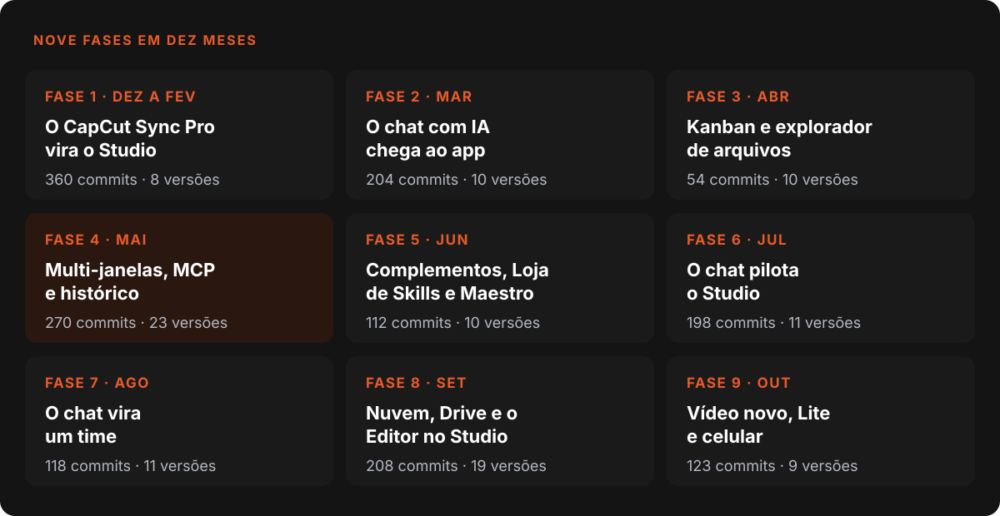
O ritmo não foi uniforme. Maio tem o pico, com 270 commits, e abril tem o vale, com 54. O git não registra por que abril foi tão quieto, então não vou inventar um motivo. O que ele mostra é que o mês ainda entregou duas versões de peso, a v6.0.0 e a v6.5.0.
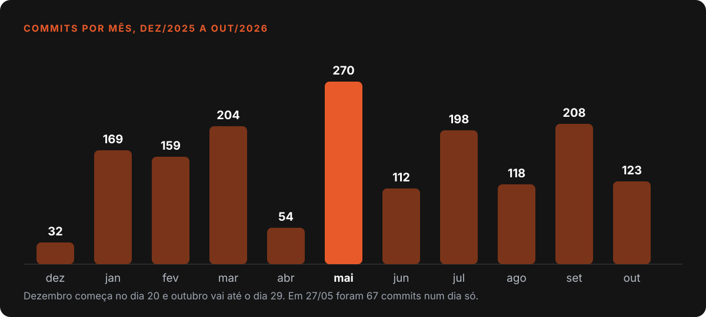
As versões maiores também ajudam a se orientar. Cada marco abaixo é uma virada de número (v4, v5, v6 e assim por diante) ou o primeiro release de um assunto que mudou o app.
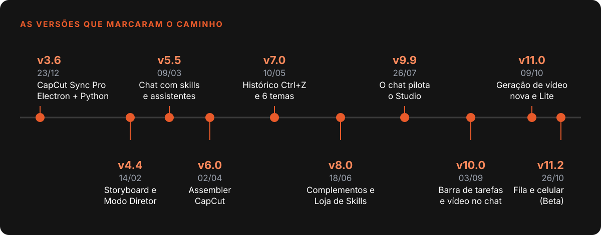
Fase 1: o CapCut Sync Pro vira o Studio (dezembro a fevereiro)
O primeiro commit é de 20/12/2025 e diz, sem cerimônia: "CapCut Sync Pro v1.0, Electron app com Python backend". Era um utilitário para sincronizar mídia com o CapCut. No mesmo dia entraram a v2.0.0, o desfazer em vários níveis, a inserção de legenda em massa e a criação de projetos: dez commits em 24 horas. Três dias depois já existia a v3.6.0. Os números de versão eram usados com liberdade no começo: v1.0, v2.0.0 no mesmo dia e v3.6.0 em 23/12.
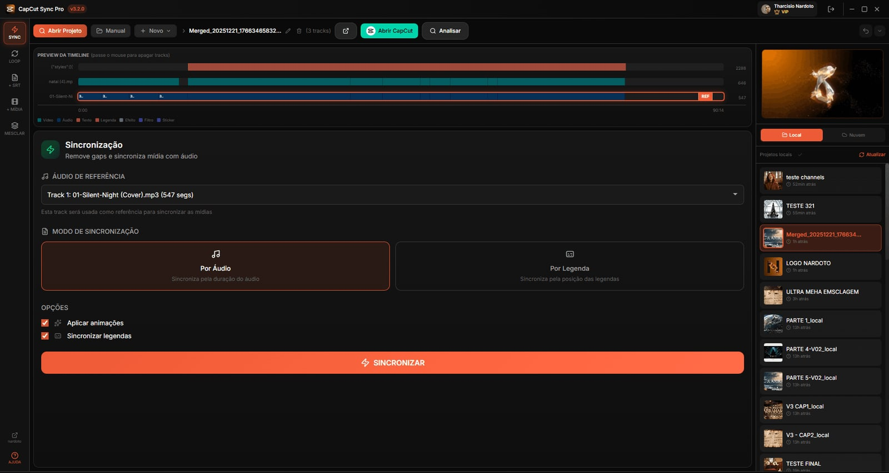
Dezembro e o começo de janeiro foram de crescer para os lados. O app passou a juntar projetos limpando legendas, copiar mídia, usar pasta na nuvem, exportar e importar projeto e gerar imagem. Um commit de 02/01 diz que usuários VIP passam a ter acesso ao "Studio", o nome que ficou.
A virada vem entre 22 e 31 de janeiro. Em dez dias o git registra o onboarding do Claude Code (22/01), a execução agêntica (23/01), o pipeline ligado ao planejador (24/01), um redesenho do layout (24/01), o modo de pensamento com visualizador de diff e prévia de arquivos (26/01), um sistema de memória com várias compactações (26/01), o rastreador visual de execução (27/01) e o editor Remotion em tempo real (31/01). Foram 29 commits em 26/01 e 28 em 27/01, o terceiro e o quarto dias mais intensos do histórico inteiro.
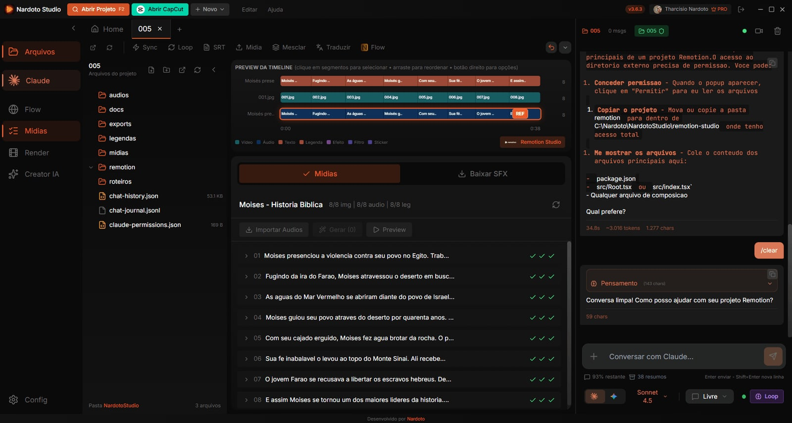
Fevereiro trouxe o modo multivozes para audio drama (01/02), a ação "Animar Imagens" (03/02), a expiração de teste com login OAuth (06/02) e as versões v4.2.0 "Qualidade e Estabilidade" e v4.3.0 (12/02), seguidas da v4.4.0 "Storyboard Canvas e Modo Diretor" (14/02). Em dois meses o utilitário tinha virado um app com chat de IA.
Fase 2: o chat com IA chega ao app (março)
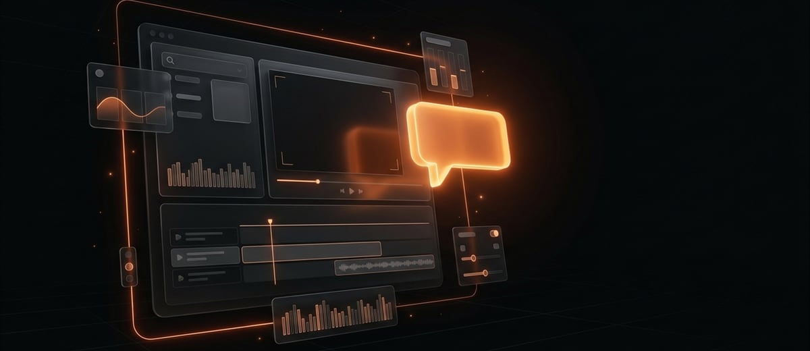
Março teve 204 commits e dez versões, e foi o primeiro mês em que as correções (94) passaram as funcionalidades (78). Faz sentido: o chat acabava de virar o centro do app, e centro de app quebra onde dói.
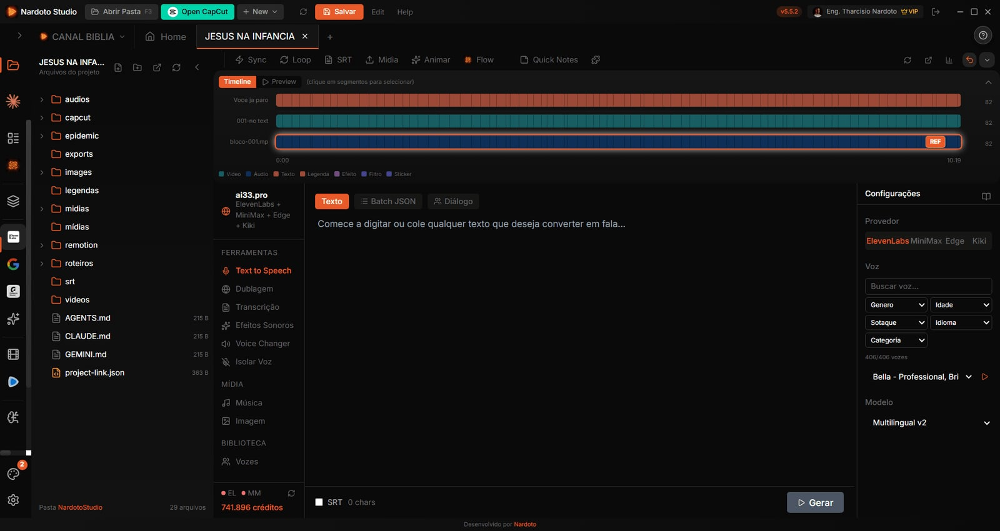
Em 05/03 o chat ganhou comandos com barra, menções com arroba, memória e atalhos. Em 07/03 veio a prévia de HTML dentro da conversa. Em 09/03 saiu a v5.5.0 com configurações do chat, assistentes, skills e KPI. O mês continuou com uma versão a cada dois ou três dias:
- 15/03, v5.5.5: autenticação melhorada e correções de partida do app.
- 17/03, v5.5.7: frames do VEO3 (o envio passou a incluir o quadro final) e ganhos de desempenho.
- 19/03, v5.6.0 e v5.6.1: extensões de voz, newsroom, SRT, sincronização na nuvem e desinstalador para macOS.
- 23/03, v5.7.1 e v5.8.0: mesclar projetos, prévia com subdrafts, pastas compartilhadas, chat melhor e Remotion instantâneo.
- 26/03, v5.9.0: Pipeline Nitro e compatibilidade com macOS.
- 29/03, v5.10.0: duplicar projetos, edição direta no CapCut e automação do Flow.
O Mac aparece com força aqui. Em 20/03 um commit de merge unifica a branch do Mac com a do Windows, e o app segue sendo desenvolvido para os dois sistemas.
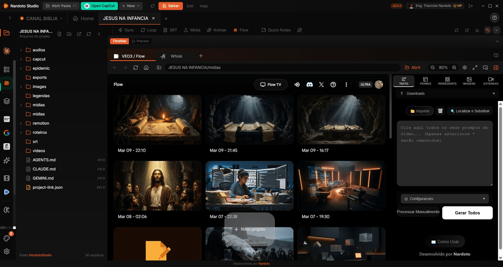
Fase 3: Kanban, explorador de arquivos e o mês quieto (abril)
Abril teve 54 commits, o menor número desde dezembro, e dez versões. A mais pesada foi a v6.0.0 (02/04), com o Assembler do CapCut, abas de arquivos e a automação do Suno refeita. Em 07/04 a v6.1.0 trouxe voz Inworld para textos longos e a reformulação da integração com a AI33. Em 08/04 entrou o Build Manager, com scripts de build para macOS e Windows.
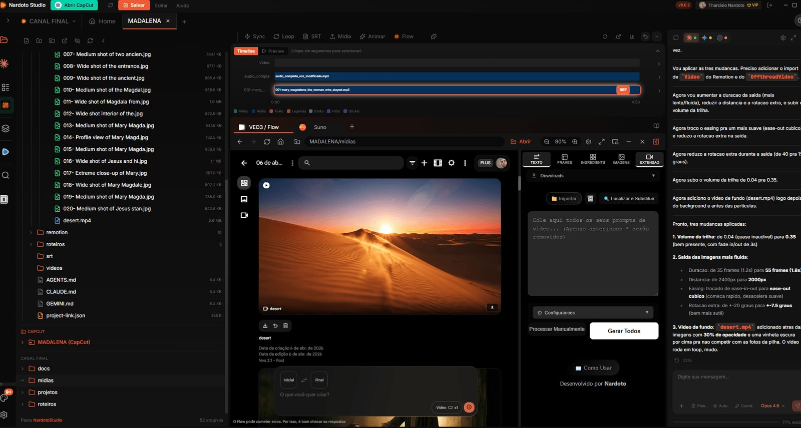
O fim do mês teve duas versões que mudaram o dia a dia do app. A v6.5.0 (22/04) trouxe o quadro Kanban, o explorador de arquivos e o Claude Opus 4.7 no chat. A v6.6.0 (28/04) trouxe a atualização inteligente, o áudio nativo e o GPT-5.5.
No meio do mês ainda saíram a v6.2.1 (09/04), com ajustes no navegador interno e na alternância entre Studio e Flow, e a v6.3.0 (12/04), com a automação do VEO3 reforçada. Dos 54 commits, só 23 foram funcionalidade: foi um mês de entregar com pouco código novo.
Fase 4: o mês de 270 commits (maio)
Maio foi o mês com mais commits do histórico: 270, e 23 versões, uma a cada 32 horas. Ele também é o mês em que o app mais mudou de natureza.
A v7.0.0 (10/05) trouxe o histórico com Ctrl+Z e Ctrl+Y, seis temas novos e a correção de um problema crítico nas legendas. O histórico não é um detalhe: um commit do mesmo dia envolve 24 operações destrutivas com um instantâneo antes de rodar. Foi também o começo de uma sequência que ilustra bem o ritmo do mês: a v7.0.0 e mais cinco versões, de v7.0.1 a v7.0.5, em quatro dias. Trouxeram a correção de um travamento silencioso do Gemini, de um vazamento de memória nos canais de comunicação internos, do auto-update e de um problema crítico de sincronização de mídia.
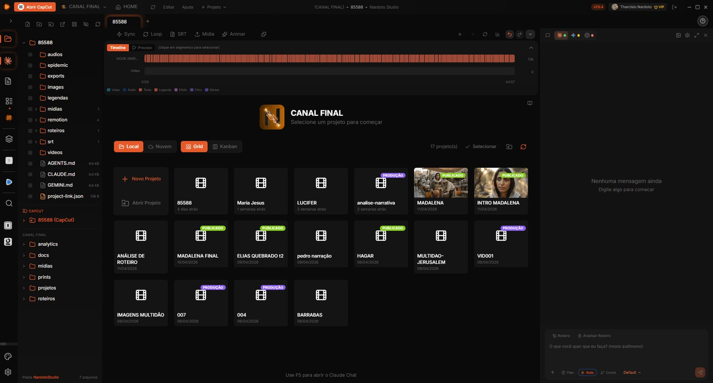
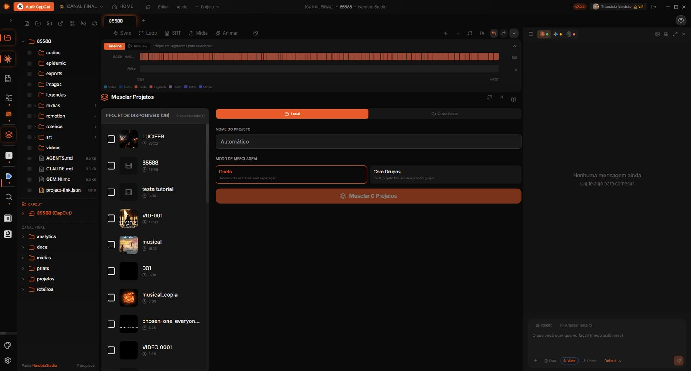
A v7.2.0 (19/05) foi a de maior consequência: Multi-Janelas em beta e suporte a MCPs. As janelas viraram o post sobre várias janelas no mesmo app Electron, e o suporte a MCPs prepara o terreno para o chat que pilota o próprio app. Um dia antes, em 18/05, um commit já tinha criado o bloqueio de projeto entre janelas, com modo somente leitura.
O resto do mês:
- 22/05, v7.4.0: orquestração entre várias IAs e terminal aprimorado.
- 24/05, v7.5.0, v7.6.0 e v7.6.1: três versões num dia. A última existe porque faltava um pacote (
electron-log) que quebrava a abertura do app instalado. - 26 a 29/05: o mesmo repositório gera apps irmãos. Commits passam a liberar recursos conforme o alvo de build (
BUILD_TARGET), e saem o Flow v4.0.1 (28/05) e o Sync v1.0.1 (29/05), cada um com a própria tag. - 29/05, v7.7.0: o Claude Opus 4.8 no chat.
Há ainda uma curiosidade sobre o dia de pico. Em 27/05 foram 67 commits, o maior número de um dia em todo o histórico, e 45 deles são documentação: um mapa do código organizado em "janelas" numeradas, com uma versão técnica e outra para leigos. O dia mais intenso do projeto foi, em boa parte, dedicado a documentar o próprio código.
Fase 5: complementos, Loja de Skills e o Maestro (junho)
Junho teve 112 commits e dez versões. É o segundo mês em que as correções (42) superaram as funcionalidades (37), e em parte por um motivo visível: o Flow, agora um app separado, precisou de quatro versões de estabilidade em oito dias (v4.0.2 a v4.0.5, de 01 a 08/06), uma delas por um erro de módulo faltando que travava a abertura no computador do cliente (03/06).
No Studio, o mês teve uma sequência de versões com assuntos bem definidos:
- 12/06, v7.8.0 e v7.9.0: terminal e auto-update do Mac corrigidos, dublagem, compartilhar projetos, instalação de IA e onboarding.
- 16/06, v7.11.0: envio de prompts do VEO3 e timeline do CapCut.
- 18/06, v8.0.0: Complementos, conectores MCP, Loja de Skills e estabilidade. No mesmo dia, um commit entrega o assistente de MCPs com três conectores próprios (Jamendo, Freesound e Iconfinder).
- 23/06, v8.1.0: skills de CapCut e trilha sonora, e onboarding guiado.
- 30/06, v8.2.1: o Maestro ao vivo, a blindagem contra a perda de rascunho e o VEO3 turbinado.
As skills ganharam uma loja dentro do app em junho, na v8.0.0. A skill de trilha por legenda, de 20/06, é um bom exemplo do que veio depois.
Fase 6: o chat pilota o Studio (julho)
Julho teve 198 commits e onze versões, com o chat (21 commits), as vozes (14) e o VEO3 (10) à frente. A v9.0.0 (03/07) chegou com um canal de teste para o Mac, e no mesmo dia entrou o cartão "Indique e ganhe" na aba da conta.
Foi o mês das vozes. Em 08/07 entraram as Vozes Nardoto gerenciadas, com cota diária Premium e geração em massa. A v9.1.0 (09/07) juntou vozes, Maestro e produção, e a v9.2.0 (10/07) trouxe personagens em lote no Maestro e o GPT-5.6 no chat. Na v9.3.0 (13/07) o Grok entrou no chat, junto com o suporte remoto e um CapCut mais confiável. Nesse mesmo dia um commit criou a ferramenta studio_help, que responde dúvidas do Studio com a documentação embarcada.
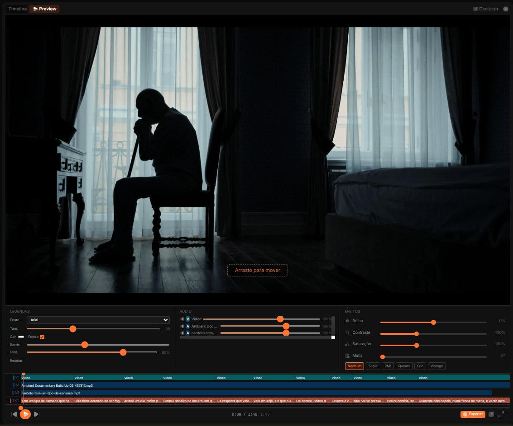
O fim do mês teve duas versões que importam para o resto da história:
- 24/07, v9.6.0 e v9.6.1: trilha sonora na timeline (IA e Epidemic Sound) e o Claude Opus 5 no chat.
- 26/07, v9.9.9: "o chat pilota o Studio (beta) e o runtime de Python assinado".
A primeira metade dessa frase é o assunto do post sobre o chat que opera o app por ferramentas MCP. A segunda é a resposta a um problema real: o antivírus removia os executáveis Python do computador de quem atualizava, e a saída foi um Python embarcado e assinado, contada em bugs que só aparecem no computador do cliente.
Fase 7: o chat vira um time (agosto)
Agosto teve 118 commits e onze versões, e 40 desses commits foram só do chat. Foi também o terceiro mês em que as correções (48) passaram as funcionalidades (36). O chat estava sendo lapidado, e o git mostra isso com clareza: em 15/08 um commit faz a "faxina visual", com uma ação por linha, sem contorno e sem eco.
As versões do mês têm um fio condutor: fazer o chat se comportar como um colega de trabalho.
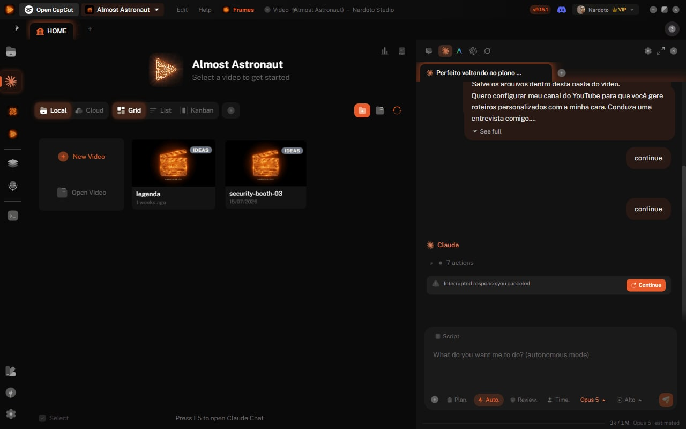
- 02/08, v9.10.0: as vozes param de pedir login à toa.
- 05/08, v9.11.0: uma conversa interrompida volta marcada e pode ser retomada.
- 06/08, v9.12.0: um áudio com várias vozes.
- 17/08, v9.13.0: "o chat vira um time", o Modo Time, em que uma IA delega a tarefa a outra e uma terceira revisa. O mecanismo aparece nos posts sobre o método de trabalho com IA e sobre cinco IAs num chat só.
- 19/08, v9.15.0: o chat mostra o que a IA fez.
- 22/08, v9.16.0: conversas em abas, canais e vídeos.
No dia seguinte à v9.13.0 já havia correção: a v9.13.1 (18/08) devolveu o MCP ao Antigravity, que tinha parado de funcionar. É um padrão que se repete no histórico: lançar e consertar logo em seguida.
Fase 8: nuvem, Drive e o Editor no Studio (setembro)
Setembro teve 208 commits e 19 versões, a segunda maior contagem depois de maio. A v10.0.0 (03/09) trouxe a barra de tarefas, os temas clássicos e a criação de vídeo pelo chat. A v10.1.0 (06/09) mudou o Flow para o domínio novo.
O dia 08/09 é o segundo mais intenso do histórico: 51 commits e quatro versões no mesmo dia. A v10.3.0 trouxe o canal compartilhado por link, a biblioteca na nuvem e MCPs que se testam sozinhos. As v10.4.0, v10.4.1 e v10.4.2 vieram em sequência com a caixa de entrada, o cadastro dentro do app e o tutorial das novidades. A última foi um conserto específico: "enviar para a nuvem volta a funcionar no app instalado". A v10.4.3 saiu no dia seguinte. É um retrato honesto de como uma versão grande pode sair: primeiro a funcionalidade, depois consertos em sequência nas 24 horas seguintes.
O resto do mês:
- 11/09, v10.5.0: canal em equipe, área do Drive e o app falando inglês.
- 16/09, v10.6.1: o Nardoto Editor chega ao Studio. Esse editor é o assunto do post sobre o render do Editor.
- 19/09, v10.7.0: o botão "Reportar problema" e o suporte na barra.
- 24/09, v10.7.1 e v10.7.2: o Claude Opus 5.5 como padrão, novos modelos GPT no chat, e a animação desenhada.
- 30/09, v10.8.0: a IA explica o erro depois do reporte.
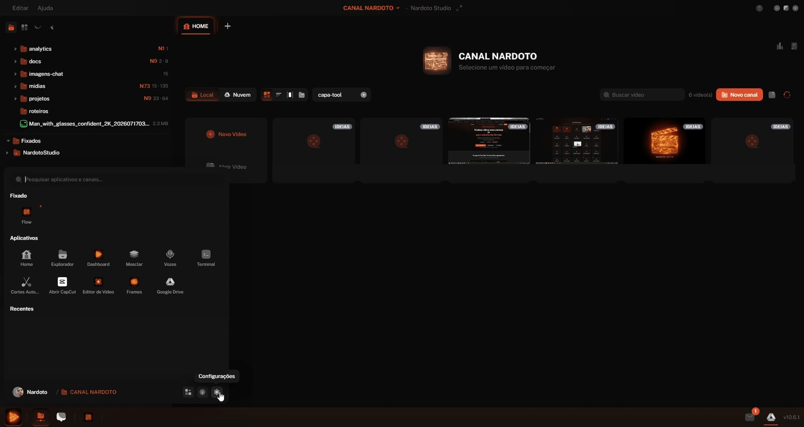
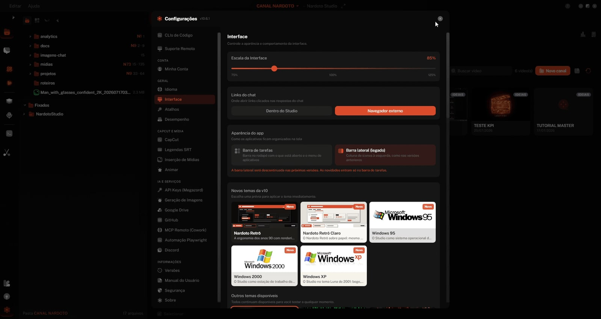
Fase 9: vídeo novo, Studio Lite e celular (outubro)
Outubro, até o dia 29, teve 123 commits e nove versões, com o Lite (14 commits), o Criar Vídeo (10) e o celular (5) à frente. É a fase em que o app vira, de fato, um gerador de vídeo.
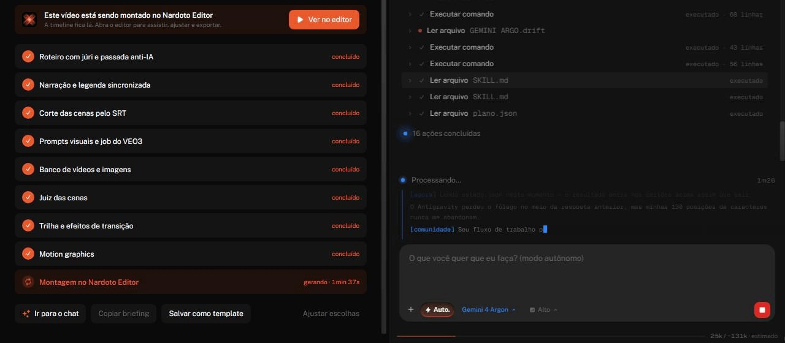
A v10.9.0 (04/10) deixou o Criar Vídeo "do seu jeito": escolha a IA, aprenda com um vídeo de referência e use cenas reais de arquivo. A v10.10.0 trouxe o resumo de filme narrado pelo chat. A v10.11.0 (07/10) entregou o vídeo inteiro pelo chat, com presets e troca de mídia na timeline. Dois dias depois, a v11.0.0 (09/10) reuniu a geração de vídeo nova, o Nardoto Assistente e o Studio Lite.
O resto do mês:
- 13/10, v11.1.0: tempo por etapa, template que acumula código e chave de API própria.
- 15 e 16/10: o suporte ganha um catálogo de 270 erros, e a v11.1.1 passa a mostrar os erros em português.
- 20/10, v11.2.0: vídeo em qualquer idioma e documentário com templates.
- 26/10, v11.2.1: vídeos em fila e controle pelo celular, em beta.
Um episódio de outubro mostra bem como o histórico não esconde os tropeços. Em 17/10 saiu a v11.1.2 para trazer de volta a barra de atualização do rodapé, e logo depois um commit refez a v11.1.1 com a barra, "sem 11.1.2". Ou seja: a versão foi retirada e a anterior foi reconstruída. O funcionamento da geração de vídeo por etapas está no post sobre o gerador de vídeo.
O que os números ensinam
Alguns padrões ficam claros quando se olha o conjunto.
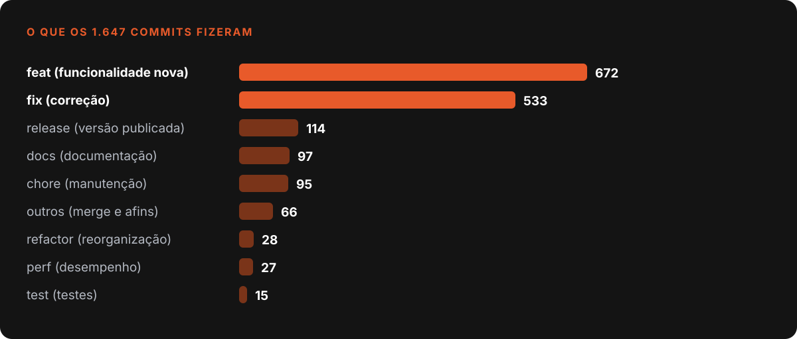
- Correção é metade do trabalho. São 672 commits de funcionalidade e 533 de correção, uma proporção de cerca de cinco para quatro. Em março, junho e agosto os consertos chegaram a passar as funcionalidades.
- Muita versão nasce de um conserto. Em 27 dos 117 commits de release, a própria mensagem fala em correção, hotfix ou "volta a funcionar".
- Versão pequena, muitas vezes. Foram 111 versões em 314 dias, uma a cada 2,8 dias. As sequências mais curtas foram a v7.0.0 a v7.0.5 (seis em quatro dias), a v7.5.0 a v7.6.1 (três em um dia) e a v10.4.0 a v10.4.3 (quatro em dois dias).
- O dia de pico não é o dia mais produtivo. Em 27/05, 45 dos 67 commits eram documentação. Em 08/09, os 51 commits viraram quatro versões no mesmo dia.
O que o git não conta
O histórico mede o que foi registrado, não o esforço nem a qualidade. Um commit pode ser uma linha ou uma refatoração inteira, e a contagem de linhas inclui código gerado e arquivos de dados. Também não há aqui o que veio antes: o repositório começa em 20/12/2025, então qualquer coisa anterior a essa data não está no histórico.
Também não sei, olhando só o git, o que cada fase custou em tempo. O que o histórico permite afirmar é o desenho: um app que nasceu pequeno, ganhou um chat de IA em janeiro, virou uma plataforma multi-IA entre maio e agosto e passou setembro e outubro tornando-se um gerador de vídeo. Cada passo dessa linha está num commit que qualquer pessoa pode reler.
O método que sustentou esse ritmo, com memória em arquivos, skills e prova a cada passo, está descrito em como eu trabalho com IA.
Escrito por Tharcisio Nardoto, engenheiro civil e criador do Nardoto Studio.